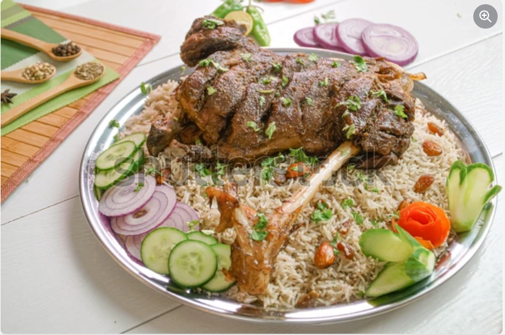

Raan Rice

Description
Traditionally, the Raan Biryani Recipe is served with boiled eggs that have been cut in half
and placed as a decoration around the Biryani. Raan Biryani is the perfect recipe and we highly recommend that
you give it a try. Although it takes a while to prepare the Raan mutton Biryani, it is totally worth it and will
blow your friends and family away.
Ingredient
- Leg of lamb (Raan)
- Biryani Masala
- Cucumber
- Tomato
- Rice
Steps
- Prepare the Raan: Wash and pat the mutton leg dry.
- Marinate: In a large bowl, mix all the marinade ingredients to form a thick paste.
- Slow Cook: Transfer the raan to a deep roasting pan or a heavy-bottomed pot.
- Sauté Aromatics: In a large pot or handi, heat the ghee or oil.
- Add Liquid: Add the reserved mutton stock.
- Cook Rice: Drain the soaked basmati rice and add it to the boiling stock.
Home